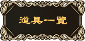

道具名称 |
道具效果 |
道具说明 |
木头饰 |
命中+5% 闪避+2% |
木头制造能增加反应能力 |
铜头饰 |
命中+10% 闪避+5% |
铜制品比木头饰还有效率些 |
铁头饰 |
命中+20% 闪避+10% |
一般军人标准的配置 |
钢头饰 |
命中+30% 闪避+15% |
用精钢制造以增加更多的反应能力 |
银头饰 |
命中+40% 闪避+20% |
白银炼制可以大幅增加反应能力 |
金头饰 |
命中+50% 闪避+25% |
头饰中的极品，售价亦不低 |
荣誉头饰 |
魔法攻击+20% 命中+20% 闪避+10% |
附有骁勇善战之骑士灵魂的魔法头饰 |
怜悯头饰 |
HP上限+20% 命中+30% 闪避+15% |
寄有怜悯之魂的魔法头饰 |
牺牲头饰 |
物理攻击，魔法攻击+30% HP上限-10% |
牺牲生命力以换取破坏力的魔法头饰 |
木盾 |
物理防御+5% |
木头制造能增加少许物理攻击的抵抗力。 |
铜盾 |
物理防御+10% |
铜制品比木盾还有效率些 |
铁盾 |
物理防御+20% |
一般军人标准的配备 |
钢盾 |
物理防御+30% |
用精钢制造以增加对物理攻击的抵抗力 |
银盾 |
物理防御+40% |
白银炼制可以大幅增加对物理攻击的抵抗力 |
金盾 |
物理防御+50% |
盾牌中的极品，售价亦不低 |
勇气盾 |
物理攻击+15%，物理防御+30% |
圣骑士专用的魔法盾 |
耻辱盾 |
物理防御+40% 魔法防御-20% |
专为胆小者定制的魔法盾 |
愚者盾 |
物理防御+40% 魔法防御-20% |
认为物理防御就是一切的愚者用盾 |
木腕轮 |
物理攻击+5% |
木头制造能增加少许物理攻击的威力 |
铜腕轮 |
物理攻击+10% |
钢制品比木制腕轮还有效率些 |
铁腕轮 |
物理攻击+20% |
一般军人标准的配备 |
钢腕轮 |
物理攻击+30% |
用精钢制造以增加威力 |
银腕轮 |
物理攻击+40% |
白银炼制可以大幅增加物理攻击的威力 |
金腕轮 |
物理攻击+50% |
腕轮中的极品，售价亦不低 |
凶暴腕轮 |
物理攻击+40% 物理防御，魔法防御-15% |
被施以狂乱咒术的护腕 |
残酷腕轮 |
物理攻击，魔法攻击+30% 魔法防御-15% |
被施以残酷咒术的护腕 |
鄙视腕轮 |
SP上限+10% 物理攻击+20% 物理防御-10% |
对自己的力量有强大自信的工匠做出来的护腕 |
琥珀护符 |
魔法防御+5% |
琥珀制的护符能增加少许对魔法的抵抗力 |
象牙护符 |
魔法防御+10% |
象牙制的护符能增加对魔法更大的抵抗力 |
黄玉护符 |
魔法防御+20% |
黄玉制成的护符能抵挡一般的魔法伤害 |
翠玉护符 |
魔法防御+30% |
翠玉制成的对魔法伤害有极大的保护作用 |
水晶护符 |
魔法防御+40% |
以水晶制成的护符是魔防低的人梦寐以求的防具 |
宝石护符 |
魔法防御+50% |
镶满宝石的护符除了美观之外实用性也是护符中的绝品 |
仁慈护符 |
物理防御，魔法防御+20% |
传说中由高僧施加防御魔法的护符 |
卑鄙护符 |
物理攻击-30% 物理防御，魔法防御+30% |
牺牲攻击力换取防御的胆小者使用护符 |
琥珀法珠 |
魔法攻击+5% |
琥珀制的法珠能增加少许施法者的集中力 |
象牙法珠 |
魔法攻击+10% |
象牙制的法珠能增加施法者更大的集中力 |
黄玉法珠 |
魔法攻击+20% |
黄玉制品对魔法力具有增幅的效果 |
翠玉法珠 |
魔法攻击+30% |
翠玉制成的法珠虽称不上极品但亦不差 |
水晶法珠 |
魔法攻击+40% |
水晶制的法珠能大幅增加施法者的集中力 |
宝石法珠 |
魔法攻击+50% |
法珠中的极品，售价亦不低 |
诚实法珠 |
魔法攻击+30% 命中+20% 闪避+10% |
高级神官用，被施以特殊魔法的法珠 |
欺诈法珠 |
魔法攻击+40% 物理防御-20% |
以牺牲物理防御来增加魔法威力的魔法珠 |
辟毒项链 |
中毒无效 |
镶有辟毒宝珠的项链 |
觉醒项链 |
睡眠无效 |
由神奇磁石制作而成的项链 |
活力项链 |
麻痹无效 |
以提神的药草编织而成的项链 |
冰之项链 |
着火无效 |
以冰玉制成的项链 |
炎之项链 |
冰结无效 |
以火山岩石炼制而成的项链 |
公正项链 |
冰结，着火，中毒无效，移动力+1 |
传说中诸神遗留下来的秘宝 |
贪心项链 |
中毒，麻痹，睡眠无效，移动力-2 |
贪心者使用的项链 |
灵性项链 |
每一回合恢复HP，MP |
经过高级神官加持祝福过的神奇项链 |
天使项链 |
魔法防御+10% |
有天使雕像的项链 |
束缚项链 |
物理防御+5% 闪避-50 麻痹无效 |
？？？ |
草鞋 |
移动力+1 |
一般常用的鞋子 |
皮鞋 |
移动力+2 |
军用皮鞋 |
长统鞋 |
移动力+3 |
鞋中的极品 |
伤药 |
回复600HP |
最简单的疗伤药 |
治疗剂 |
回复1200HP |
稍微强力的疗伤药 |
回复剂 |
回复2000HP |
最强力的疗伤药 |
解毒药 |
解毒 |
一般解毒用的草药 |
中和剂 |
解中毒，麻痹，睡眠 |
解除身体不利状况的秘药 |
沉思之水 |
回复200SP |
祝福过的药水，可以回复饮用者的魔力 |
冥想之水 |
回复500SP |
圣灵加持过的药水，可以回复饮用者大量的魔力 |
腕力之酒 |
增加力量 |
可以增加饮用者腕力的药酒 |
体力之酒 |
增加体力 |
可以增加饮用者体力的药酒 |
魔力之酒 |
增加魔力 |
可以增加饮用者魔法威力的药酒 |
敏捷之酒 |
增加敏捷 |
可以增加饮用者反应力的药酒 |
生命之实 |
增加HP上限 |
可以增加食用者生命力的果实 |
魔力之实 |
增加SP上限 |
可以增加食用者魔法力的果实 |
生命水晶 |
每一回合恢复HP |
能激发人体活力的水晶 |
魔力水晶 |
每一回合恢复SP |
能激发人体魔力的水晶 |
蝎狮之尾 |
习得特性“毒血” |
从死亡蝎狮身上取下的剧毒之物 |
毒龙之鳞 |
习得特性“毒魂” |
传说中毒龙掉落的鳞片 |
梦魔之翼 |
习得特性“梦魇” |
梦魇羽化之后留下的双翅 |
冰狼之鬃 |
习得特性“冰晶” |
冰狼芬莉儿德鬃毛 |
火灵之魂 |
习得特性“火灵” |
收集死亡的伊弗里特炼制而成的宝珠 |
吸血鬼之牙 |
习得特性“吸血” |
死亡的吸血鬼掉落的利牙 |
莉莉丝之吻 |
习得特性“吸魔” |
形状像莉莉丝唇印的宝石 |
凤凰之羽 |
习得特性“再生” |
传说中不死鸟掉落的羽毛 |
碧绿原石 |
炼化“毒龙之鳞” |
用来炼化“毒龙之鳞”的道具 |
漆黑原石 |
炼化“勇气盾” |
用来炼化“勇气盾”的道具 |
纯白原石 |
炼化“灵性项链” |
用来炼化“灵性项链”的道具 |
家书 |
？？？ |
报平安的书信 |